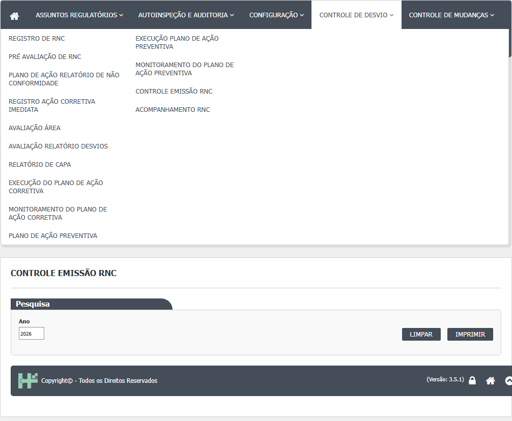
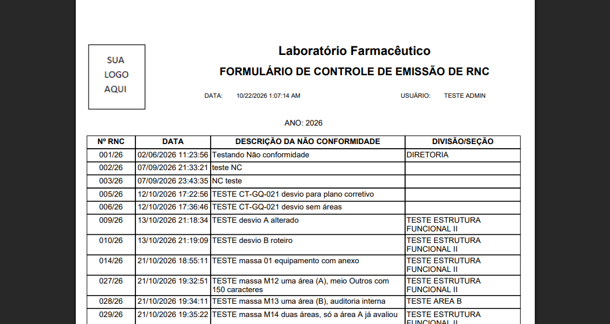
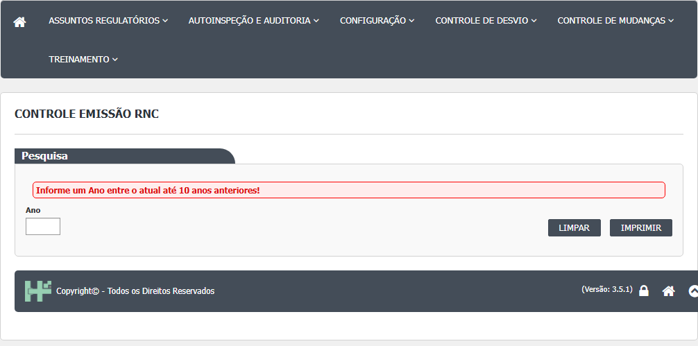

- No menu, abra Controle de Desvios › Controle de Emissão de RNC. A tela tem o bloco Pesquisa com um único campo, Ano, já preenchido com o ano atual. Não há lista na tela: o resultado sai em PDF.

- Se quiser outro ano, apague e digite os quatro dígitos. O campo só aceita números e no máximo quatro dígitos.
- Clique em Imprimir. Uma nova janela abre com o PDF "FORMULÁRIO DE CONTROLE DE EMISSÃO DE RNC", com o ano no alto e as colunas Nº RNC, DATA, DESCRIÇÃO DA NÃO CONFORMIDADE e DIVISÃO/SEÇÃO.
- O ano precisa estar entre o ano atual e dez anos antes. Fora disso aparece a faixa vermelha "Informe um Ano entre o atual até 10 anos anteriores!" e nada é impresso.

- Limpar apaga o campo Ano (que fica vazio) e esconde a faixa vermelha. Imprimir com o campo vazio mostra a mesma faixa vermelha.

- Não há botão Pesquisar, Incluir, Editar, Cancelar ou Visualizar. A tela só tem Limpar e Imprimir.
- Como ler o PDF: cada linha é um desvio que já passou pela pré-avaliação no ano escolhido. Nº RNC é o número com o ano (por exemplo 006/26), DATA é a data e hora do registro do desvio, DESCRIÇÃO é o texto do desvio e DIVISÃO/SEÇÃO é a área da pessoa que registrou o desvio (vazia se a pessoa não tem área).
Observado na rodada 1 (21/10/2026):
- O campo Ano abre com 2026 e o PDF traz "ANO: 2026"; a data e a hora impressas saem no formato americano (CT-GQ-N14-01; DV-GQ-034).
- Ano seguinte (2027), 2010, vazio e texto "abc": aparece "Informe um Ano entre o atual até 10 anos anteriores!" e nenhuma janela abre; 2026 imprime (CT-GQ-N14-02).
- O PDF da massa lista só os desvios já pré-avaliados: 001, 002, 003, 005, 006, 009, 010, 014, 027 a 049 e 052 a 059. Ficam de fora, por exemplo, 004, 007, 008, 011 a 013, 015, 016 e 017 a 026 (CT-GQ-N14-06; DV-GQ-030).
- Os desvios cancelados antes da pré-avaliação (004, 011, 017 e 018) não aparecem e não há marca de cancelado, o que deixa buracos na sequência dos números (CT-GQ-N14-07; DV-GQ-030). A coluna DIVISÃO/SEÇÃO fica vazia para vários desvios (CT-GQ-F15).
Rodada 3 (22/10/2026)
Fonte: execucao/2026-10-22-desvios-rodada-3c/resultado.md. O que a rodada mostrou de novo ou contrário ao passo a passo acima:
- Passo 4, limite de dez anos: o ano atual menos dez (2016) abre o PDF; 2015 mostra a faixa "Informe um Ano entre o atual até 10 anos anteriores!" (CT-GQ-N14-03).
- Passo 5, Limpar: esvazia o campo Ano. Imprimir com o campo vazio mostra a mesma faixa vermelha (CT-GQ-N14-04).
- Passo 7, colunas do PDF (CT-GQ-N14-08): Nº RNC com o ano (por exemplo 001/26), DATA com data e hora (02/06/2026 11:23:56), descrição completa (inclusive a de 150 caracteres) e DIVISÃO/SEÇÃO com a área de quem registrou (028/26: TESTE AREA B; 029/26: TESTE ESTRUTURA FUNCIONAL II). O desvio registrado por usuário sem área (030/26) sai com DIVISÃO/SEÇÃO vazia, sem erro (CT-GQ-N14-09).
- Atenção, o controle não está completo (CT-GQ-N14-12; DV-GQ-082): nos três desvios consecutivos 080, 081 e 082, o 081 (cancelado antes da pré-avaliação) não está no controle. Em 22/10/2026 o controle mostrou 58 dos 85 desvios: faltam os 9 cancelados e todos os que ainda estão em Pendente Registro ou Pendente Pré Avaliação. Não há marca de lacuna entre o 080 e o 083. Quem confere a numeração por este PDF não vê os números faltando; use a lista da tela 1 para completar.
Rodada 4 (22/10/2026)
Fonte: execucao/2026-10-22-desvios-rodada-4/resultado.md. O que a rodada mostrou de novo ou contrário ao passo a passo acima:
- Passo 2, digitação (CT-GQ-N14-05): letras e sinais não entram; "12345" fica "1234" e "20a2-6" fica "2026".
- Passo 3, o PDF (CT-GQ-N14-11): traz o cliente, o título "FORMULÁRIO DE CONTROLE DE EMISSÃO DE RNC", o ano, o usuário que imprimiu, a página ("Página 1/3") e o logotipo, em folha A4 em pé. A data e a hora impressas saem em formato americano com AM/PM.
- Ano sem desvios (CT-GQ-N14-10): com 2025, o PDF sai só com o cabeçalho, sem linhas e sem aviso. Quem imprime um ano sem registros não sabe se não houve desvios ou se o filtro falhou.
Campos da tela
Tela (Index)
| Campo na tela | Tipo | Obrigatório | Regra, limite ou valores possíveis | Fonte (arquivo:linha) |
|---|---|---|---|---|
| Faixa de erro | Mensagem | Não se aplica | Mostra "Informe um Ano entre o atual até 10 anos anteriores!" | Index.cshtml:18; ControleEmissaoRNCIndex.js:12-13 |
Colunas do relatório (PDF)
| Campo no relatório | Tipo | Obrigatório | Regra, limite ou valores possíveis | Fonte (arquivo:linha) |
|---|---|---|---|---|
| Cabeçalho: título | Texto fixo | Não se aplica | FORMULÁRIO DE CONTROLE DE EMISSÃO DE RNC | Reports/RNCControleEmissaoRelatorio.cs:34 |
| Cabeçalho: "ANO: aaaa" | Texto | Não se aplica | Ano informado | Reports/RNCControleEmissaoRelatorio.cs:36; RNCControleEmissao.rdlc (parâmetro Ano) |
| Cabeçalho: cliente e logotipo | Texto e imagem | Não se aplica | Vêm da configuração do cliente no Principal | UI/Controllers/Services/ObterRelatorioComConfiguracaoClienteService.cs:53-69 |
| Rodapé: DATA, USUÁRIO e Página x/y | Texto | Não se aplica | Data e hora da impressão, nome de quem imprimiu e paginação Rodada 1 (CT-GQ-N14-01; DV-GQ-034): a data e a hora de impressão saíram no formato americano (por exemplo 10/21/2026 10:03 PM). | RNCControleEmissao.rdlc (campos Now(), Usuario e PageNumber) |
| Nº RNC | Texto | Não se aplica | Número do desvio com o ano; sem ano gravado, mostra o Id com zeros Rodada 1 (CT-GQ-N14-06): só os desvios já pré-avaliados aparecem (DV-GQ-030). | Reports/DadosRNCFactory.cs:248; Domain/Entities/Bloco2/ControleDesvios/RegistroNaoConformidade.cs:16-34 |
| DATA | Texto | Não se aplica | Data e hora do registro do desvio, no formato padrão do servidor (data e hora, não só a data) | Reports/DadosRNCFactory.cs:250 |
| DESCRIÇÃO DA NÃO CONFORMIDADE | Texto | Não se aplica | Descrição do desvio | Reports/DadosRNCFactory.cs:249 |
| DIVISÃO/SEÇÃO | Texto | Não se aplica | Área da pessoa que registrou o desvio, buscada no Principal; em branco se a pessoa não tem área Rodada 1 (CT-GQ-F15): a coluna fica vazia para vários desvios; o resultado não diz se os criadores não têm área. | Reports/DadosRNCFactory.cs:241-245,251 |
Rodada 3 (22/10/2026)
Fonte: execucao/2026-10-22-desvios-rodada-3c/resultado.md.
- Faixa de erro: texto exato "Informe um Ano entre o atual até 10 anos anteriores!" para 2015 e para o campo vazio.
- Nº RNC, DATA e DESCRIÇÃO: Nº RNC com o ano (001/26), DATA com data e hora (02/06/2026 11:23:56) e descrição completa, inclusive a de 150 caracteres (CT-GQ-N14-08).
- DIVISÃO/SEÇÃO: área de quem registrou o desvio (028/26: TESTE AREA B; 029/26: TESTE ESTRUTURA FUNCIONAL II); vazia, sem erro, quando quem registrou não tem área (030/26) (CT-GQ-N14-08 e N14-09).
Rodada 4 (22/10/2026)
Fonte: execucao/2026-10-22-desvios-rodada-4/resultado.md.
- Ano: aceita só números e no máximo quatro dígitos (CT-GQ-N14-05).
- Rodapé: DATA, USUÁRIO e Página x/y (CT-GQ-N14-11): página no formato "Página 1/3"; data e hora em formato americano com AM/PM, o mesmo comportamento do DV-GQ-034 (o resultado da rodada 4 não cita o número). O resultado situa a data no cabeçalho; o desenho do relatório a coloca no rodapé. A posição exata na folha segue a conferir.
- Cabeçalho (CT-GQ-N14-11): cliente, título "FORMULÁRIO DE CONTROLE DE EMISSÃO DE RNC", ano e logotipo conferem.
Botões e ações
| Botão ou ação | Quando aparece | O que faz | Para onde leva o desvio | Fonte |
|---|---|---|---|---|
| Imprimir | Sempre | Confere o ano no navegador e abre o PDF numa nova janela Rodada 1: com o ano atual abre o PDF "ANO: 2026" (CT-GQ-N14-01); com ano seguinte, 2010, vazio ou texto mostra a faixa de erro e não abre janela (CT-GQ-N14-02). | Não muda o desvio; a tela não grava | Index.cshtml:28; Bloco2/Script/ControleEmissaoRNCIndex.js:6-17; ControleEmissaoController.cs:29-55 |
| Limpar | Sempre | Esvazia o campo Ano e esconde a faixa de erro | Não muda o desvio | Index.cshtml:27; ControleEmissaoRNCIndex.js:1-4 |
| Pesquisar | Não existe | (a tela só tem Limpar e Imprimir) | Não se aplica | Index.cshtml:25-30 |
Rodada 3 (22/10/2026)
Fonte: execucao/2026-10-22-desvios-rodada-3c/resultado.md.
- Limpar: esvazia o campo Ano; Imprimir logo depois mostra a faixa de erro (CT-GQ-N14-04).
- Imprimir: ano atual menos dez abre o PDF; menos onze mostra a faixa e não abre janela (CT-GQ-N14-03). O PDF traz 58 dos 85 desvios do sistema (CT-GQ-N14-12; DV-GQ-082).
Rodada 4 (22/10/2026)
Fonte: execucao/2026-10-22-desvios-rodada-4/resultado.md.
- Imprimir com um ano sem desvios (2025): abre o PDF só com o cabeçalho, sem linhas e sem aviso (CT-GQ-N14-10).
- Imprimir: o PDF abre em folha A4 em pé, com cliente, título, ano, usuário, página e logotipo (CT-GQ-N14-11).
Mensagens do sistema
| Mensagem (texto exato do código) | Quando aparece | Fonte |
|---|---|---|
| Informe um Ano entre o atual até 10 anos anteriores! | Imprimir com ano maior que o atual, menor que o atual menos dez, ou vazio Texto visto na tela em 21/10/2026 (CT-GQ-N14-02), com ano seguinte, 2010, vazio e texto. | Bloco2/Script/ControleEmissaoRNCIndex.js:12 |
| Não foi possível imprimir o Controle Emissão RNC | Qualquer erro ao gerar o relatório | ControleEmissaoController.cs:53 |
| Usuário logado não foi encontrado. | Relatório pedido com usuário ausente depois da leitura da sessão | UI/Controllers/Services/ObterRelatorioComConfiguracaoClienteService.cs:57 |
| Configuração do cliente não foi encontrada | Cliente sem configuração no Principal | UI/Controllers/Services/ObterRelatorioComConfiguracaoClienteService.cs:56 |
Rodada 3 (22/10/2026)
Fonte: execucao/2026-10-22-desvios-rodada-3c/resultado.md.
Nenhuma mensagem nova. A faixa "Informe um Ano entre o atual até 10 anos anteriores!" apareceu para o ano 2015 e para o campo vazio (CT-GQ-N14-03 e N14-04). Para a lacuna na numeração (080, 081, 082) nenhuma mensagem aparece (CT-GQ-N14-12).
Rodada 4 (22/10/2026)
Fonte: execucao/2026-10-22-desvios-rodada-4/resultado.md.
Nenhuma mensagem nova. Para o ano sem desvios (2025) nenhuma mensagem aparece (CT-GQ-N14-10). Os caracteres não numéricos nem chegam ao campo (CT-GQ-N14-05).